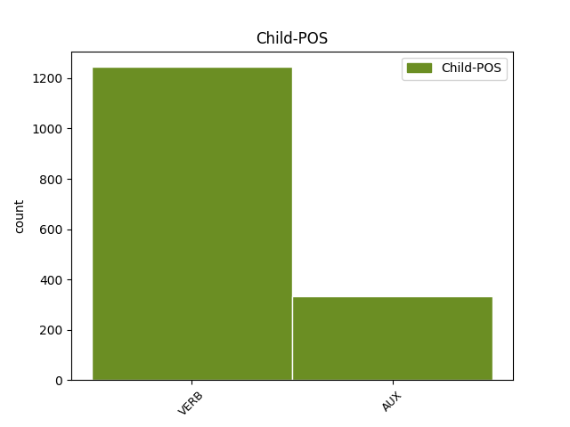

Distribution of features within this leaf

Agreement Rules sorted by frequency.
- When the dependent token is the conjunct(conj) of the head token, and the dependent token is VERB.
1 В _ _ _ _ 0 _ _ _
2 четвъртък _ _ _ _ 0 _ _ _
3 евродепутатите _ _ _ _ 0 _ _ _
4 обсъждаха обсъждам VERB Vpitf-o3p Aspect=Imp|Mood=Ind|Number=Plur|Person=3|Tense=Past|VerbForm=Fin|Voice=Act 0 _ _ _
5 и _ _ _ _ 0 _ _ _
6 гласуваха гласувам VERB Vpitf-o3p Aspect=Imp|Mood=Ind|Number=Plur|Person=3|Tense=Past|VerbForm=Fin|Voice=Act 4 conj _ _
7 на _ _ _ _ 0 _ _ _
8 първо _ _ _ _ 0 _ _ _
9 четене _ _ _ _ 0 _ _ _
10 проектобюджета _ _ _ _ 0 _ _ _
11 . _ _ _ _ 0 _ _ _
1 При _ _ _ _ 0 _ _ _
2 взрива _ _ _ _ 0 _ _ _
3 е съм AUX Vxitf-r3s Aspect=Imp|Mood=Ind|Number=Sing|Person=3|Tense=Pres|VerbForm=Fin|Voice=Act 0 _ _ _
4 загинал _ _ _ _ 0 _ _ _
5 шофьорът _ _ _ _ 0 _ _ _
6 на _ _ _ _ 0 _ _ _
7 автомобила _ _ _ _ 0 _ _ _
8 , _ _ _ _ 0 _ _ _
9 а _ _ _ _ 0 _ _ _
10 10 _ _ _ _ 0 _ _ _
11 души _ _ _ _ 0 _ _ _
12 са съм AUX Vxitf-r3p Aspect=Imp|Mood=Ind|Number=Plur|Person=3|Tense=Pres|VerbForm=Fin|Voice=Act 3 conj _ _
13 били _ _ _ _ 0 _ _ _
14 откарани _ _ _ _ 0 _ _ _
15 в _ _ _ _ 0 _ _ _
16 болницата _ _ _ _ 0 _ _ _
17 заради _ _ _ _ 0 _ _ _
18 преживения _ _ _ _ 0 _ _ _
19 шок _ _ _ _ 0 _ _ _
20 . _ _ _ _ 0 _ _ _
1 ЕС _ _ _ _ 0 _ _ _
2 обаче _ _ _ _ 0 _ _ _
3 иска искам VERB Vpitf-r3s Aspect=Imp|Mood=Ind|Number=Sing|Person=3|Tense=Pres|VerbForm=Fin|Voice=Act 13 parataxis _ _
4 Москва _ _ _ _ 0 _ _ _
5 да _ _ _ _ 0 _ _ _
6 ратифицира _ _ _ _ 0 _ _ _
7 Еврохартата _ _ _ _ 0 _ _ _
8 за _ _ _ _ 0 _ _ _
9 инвестиции _ _ _ _ 0 _ _ _
10 в _ _ _ _ 0 _ _ _
11 енергоотрасъла _ _ _ _ 0 _ _ _
12 , _ _ _ _ 0 _ _ _
13 припомня припомням-(си) VERB Vpitf-r3s Aspect=Imp|Mood=Ind|Number=Sing|Person=3|Tense=Pres|VerbForm=Fin|Voice=Act 0 _ _ _
14 Ройтерс _ _ _ _ 0 _ _ _
15 . _ _ _ _ 0 _ _ _
1 Това _ _ _ _ 0 _ _ _
2 е съм AUX Vxitf-r3s Aspect=Imp|Mood=Ind|Number=Sing|Person=3|Tense=Pres|VerbForm=Fin|Voice=Act 20 parataxis _ _
3 най-кървавият _ _ _ _ 0 _ _ _
4 атентат _ _ _ _ 0 _ _ _
5 от _ _ _ _ 0 _ _ _
6 декември _ _ _ _ 0 _ _ _
7 миналата _ _ _ _ 0 _ _ _
8 година _ _ _ _ 0 _ _ _
9 , _ _ _ _ 0 _ _ _
10 когато _ _ _ _ 0 _ _ _
11 ЕТА _ _ _ _ 0 _ _ _
12 обяви _ _ _ _ 0 _ _ _
13 край _ _ _ _ 0 _ _ _
14 на _ _ _ _ 0 _ _ _
15 примирието _ _ _ _ 0 _ _ _
16 с _ _ _ _ 0 _ _ _
17 испанското _ _ _ _ 0 _ _ _
18 правителство _ _ _ _ 0 _ _ _
19 , _ _ _ _ 0 _ _ _
20 констатира констатирам VERB Vpitf-r3s Aspect=Imp|Mood=Ind|Number=Sing|Person=3|Tense=Pres|VerbForm=Fin|Voice=Act 0 _ _ _
21 Ройтерс _ _ _ _ 0 _ _ _
22 . _ _ _ _ 0 _ _ _
1 Президентът _ _ _ _ 0 _ _ _
2 подписва _ _ _ _ 0 _ _ _
3 стотици _ _ _ _ 0 _ _ _
4 закони _ _ _ _ 0 _ _ _
5 и _ _ _ _ 0 _ _ _
6 може може VERB Vniif-r3s Aspect=Imp|Mood=Ind|Number=Sing|Person=3|Tense=Pres|VerbForm=Fin|Voice=Act 0 _ _ _
7 би съм VERB Vxitu-o3s Aspect=Imp|Mood=Cnd|Number=Sing|Person=3|Tense=Past|VerbForm=Fin 6 unk@fixed _ _
8 просто _ _ _ _ 0 _ _ _
9 не _ _ _ _ 0 _ _ _
10 е _ _ _ _ 0 _ _ _
11 имал _ _ _ _ 0 _ _ _
12 време _ _ _ _ 0 _ _ _
13 за _ _ _ _ 0 _ _ _
14 тържествена _ _ _ _ 0 _ _ _
15 церемония _ _ _ _ 0 _ _ _
16 заради _ _ _ _ 0 _ _ _
17 напрегнатата _ _ _ _ 0 _ _ _
18 си _ _ _ _ 0 _ _ _
19 програма _ _ _ _ 0 _ _ _
20 . _ _ _ _ 0 _ _ _
1 Има _ _ _ _ 0 _ _ _
2 разминаване _ _ _ _ 0 _ _ _
3 в _ _ _ _ 0 _ _ _
4 оценката _ _ _ _ 0 _ _ _
5 за _ _ _ _ 0 _ _ _
6 управлението _ _ _ _ 0 _ _ _
7 между _ _ _ _ 0 _ _ _
8 нас аз PRON Ppelap1 Case=Acc|Number=Plur|Person=1|PronType=Prs 0 _ _ _
9 , _ _ _ _ 0 _ _ _
10 които _ _ _ _ 0 _ _ _
11 управляваме управлявам VERB Vpitf-r1p Aspect=Imp|Mood=Ind|Number=Plur|Person=1|Tense=Pres|VerbForm=Fin|Voice=Act 8 mod@relcl _ SpaceAfter=No
12 , _ _ _ _ 0 _ _ _
13 и _ _ _ _ 0 _ _ _
14 хората _ _ _ _ 0 _ _ _
15 , _ _ _ _ 0 _ _ _
16 каза _ _ _ _ 0 _ _ _
17 президентът _ _ _ _ 0 _ _ _
18 . _ _ _ _ 0 _ _ _
1 Аз _ _ _ _ 0 _ _ _
2 не _ _ _ _ 0 _ _ _
3 мога мога VERB Vpiif-r1s Aspect=Imp|Mood=Ind|Number=Sing|Person=1|Tense=Pres|VerbForm=Fin|Voice=Act 0 _ _ _
4 се _ _ _ _ 0 _ _ _
5 правя правя-(се) VERB Vpitf-r1s Aspect=Imp|Mood=Ind|Number=Sing|Person=1|Tense=Pres|VerbForm=Fin|Voice=Act 3 comp:pred _ _
6 на _ _ _ _ 0 _ _ _
7 ханъма _ _ _ _ 0 _ _ _
1 На _ _ _ _ 0 _ _ _
2 изпит _ _ _ _ 0 _ _ _
3 във _ _ _ _ 0 _ _ _
4 валийството _ _ _ _ 0 _ _ _
5 я _ _ _ _ 0 _ _ _
6 питат питам-(се) VERB Vpitf-r3p Aspect=Imp|Mood=Ind|Number=Plur|Person=3|Tense=Pres|VerbForm=Fin|Voice=Act 0 _ _ _
7 къде _ _ _ _ 0 _ _ _
8 е съм AUX Vxitf-r3s Aspect=Imp|Mood=Ind|Number=Sing|Person=3|Tense=Pres|VerbForm=Fin|Voice=Act 6 comp:pred _ _
9 роден _ _ _ _ 0 _ _ _
10 Ататюрк _ _ _ _ 0 _ _ _
11 и _ _ _ _ 0 _ _ _
12 кога _ _ _ _ 0 _ _ _
13 е _ _ _ _ 0 _ _ _
14 умрял _ _ _ _ 0 _ _ _
15 . _ _ _ _ 0 _ _ _
1 Австрийската _ _ _ _ 0 _ _ _
2 фирма _ _ _ _ 0 _ _ _
3 " _ _ _ _ 0 _ _ _
4 Билла _ _ _ _ 0 _ _ _
5 " _ _ _ _ 0 _ _ _
6 е съм AUX Vxitf-r3s Aspect=Imp|Mood=Ind|Number=Sing|Person=3|Tense=Pres|VerbForm=Fin|Voice=Act 23 subj@pass _ _
7 водещият _ _ _ _ 0 _ _ _
8 кандидат _ _ _ _ 0 _ _ _
9 в _ _ _ _ 0 _ _ _
10 конкурса _ _ _ _ 0 _ _ _
11 на _ _ _ _ 0 _ _ _
12 общината _ _ _ _ 0 _ _ _
13 в _ _ _ _ 0 _ _ _
14 Пловдив _ _ _ _ 0 _ _ _
15 за _ _ _ _ 0 _ _ _
16 изграждане _ _ _ _ 0 _ _ _
17 на _ _ _ _ 0 _ _ _
18 хипермаркет _ _ _ _ 0 _ _ _
19 без _ _ _ _ 0 _ _ _
20 конкурс _ _ _ _ 0 _ _ _
21 , _ _ _ _ 0 _ _ _
22 се _ _ _ _ 0 _ _ _
23 разбра разбера-(се) VERB Vpptf-o3s Aspect=Perf|Mood=Ind|Number=Sing|Person=3|Tense=Past|VerbForm=Fin|Voice=Act 0 _ _ _
24 вчера _ _ _ _ 0 _ _ _
25 . _ _ _ _ 0 _ _ _
1 И _ _ _ _ 0 _ _ _
2 откъде _ _ _ _ 0 _ _ _
3 накъде _ _ _ _ 0 _ _ _
4 ти аз PRON Ppe-os2 Case=Nom|Number=Sing|Person=2|PronType=Prs 0 _ _ _
5 , _ _ _ _ 0 _ _ _
6 където _ _ _ _ 0 _ _ _
7 си съм AUX Vxitf-r2s Aspect=Imp|Mood=Ind|Number=Sing|Person=2|Tense=Pres|VerbForm=Fin|Voice=Act 4 mod@relcl _ _
8 най-добър _ _ _ _ 0 _ _ _
9 ? _ _ _ _ 0 _ _ _
Disagree Examples:
1 Спестеното _ _ _ _ 0 _ _ _
2 отиде отида-(си) VERB Vppif-o3s Aspect=Perf|Mood=Ind|Number=Sing|Person=3|Tense=Past|VerbForm=Fin|Voice=Act 0 _ _ _
3 , _ _ _ _ 0 _ _ _
4 взех взема VERB Vpptf-o1s Aspect=Perf|Mood=Ind|Number=Sing|Person=1|Tense=Past|VerbForm=Fin|Voice=Act 2 conj _ _
5 назаем _ _ _ _ 0 _ _ _
6 . _ _ _ _ 0 _ _ _
1 Аз _ _ _ _ 0 _ _ _
2 имах имам VERB Vpitf-m1s Aspect=Imp|Mood=Ind|Number=Sing|Person=1|Tense=Imp|VerbForm=Fin|Voice=Act 0 _ _ _
3 една _ _ _ _ 0 _ _ _
4 ябълка _ _ _ _ 0 _ _ _
5 лимонка _ _ _ _ 0 _ _ _
6 , _ _ _ _ 0 _ _ _
7 родовито _ _ _ _ 0 _ _ _
8 дърво _ _ _ _ 0 _ _ _
9 беше съм AUX Vxitf-t3s Aspect=Imp|Mood=Ind|Number=Sing|Person=3|Tense=Past|VerbForm=Fin|Voice=Act 2 conj _ SpaceAfter=No
10 . _ _ _ _ 0 _ _ _
1 Виното _ _ _ _ 0 _ _ _
2 рекло _ _ _ _ 0 _ _ _
3 : _ _ _ _ 0 _ _ _
4 мене _ _ _ _ 0 _ _ _
5 ме _ _ _ _ 0 _ _ _
6 мъчат мъча-(се) VERB Vpitf-r3p Aspect=Imp|Mood=Ind|Number=Plur|Person=3|Tense=Pres|VerbForm=Fin|Voice=Act 0 _ _ _
7 , _ _ _ _ 0 _ _ _
8 ама _ _ _ _ 0 _ _ _
9 и _ _ _ _ 0 _ _ _
10 аз _ _ _ _ 0 _ _ _
11 мъча мъча-(се) VERB Vpitf-r1s Aspect=Imp|Mood=Ind|Number=Sing|Person=1|Tense=Pres|VerbForm=Fin|Voice=Act 6 conj _ SpaceAfter=No
12 . _ _ _ _ 0 _ _ _
1 Стихна стихна VERB Vppif-o3s Aspect=Perf|Mood=Ind|Number=Sing|Person=3|Tense=Past|VerbForm=Fin|Voice=Act 0 _ _ _
2 боят _ _ _ _ 0 _ _ _
3 , _ _ _ _ 0 _ _ _
4 мили _ _ _ _ 0 _ _ _
5 мой _ _ _ _ 0 _ _ _
6 , _ _ _ _ 0 _ _ _
7 ала _ _ _ _ 0 _ _ _
8 ти _ _ _ _ 0 _ _ _
9 не _ _ _ _ 0 _ _ _
10 се _ _ _ _ 0 _ _ _
11 завръщаш завръщам-(се) VERB Vpitf-r2s Aspect=Imp|Mood=Ind|Number=Sing|Person=2|Tense=Pres|VerbForm=Fin|Voice=Act 1 conj _ SpaceAfter=No
12 . _ _ _ _ 0 _ _ _
1 Посягам посягам VERB Vpiif-r1s Aspect=Imp|Mood=Ind|Number=Sing|Person=1|Tense=Pres|VerbForm=Fin|Voice=Act 0 _ _ _
2 , _ _ _ _ 0 _ _ _
3 но _ _ _ _ 0 _ _ _
4 преди _ _ _ _ 0 _ _ _
5 да _ _ _ _ 0 _ _ _
6 те _ _ _ _ 0 _ _ _
7 хвана _ _ _ _ 0 _ _ _
8 , _ _ _ _ 0 _ _ _
9 ти _ _ _ _ 0 _ _ _
10 отлиташ отлитам VERB Vpiif-r2s Aspect=Imp|Mood=Ind|Number=Sing|Person=2|Tense=Pres|VerbForm=Fin|Voice=Act 1 conj _ SpaceAfter=No
11 . _ _ _ _ 0 _ _ _